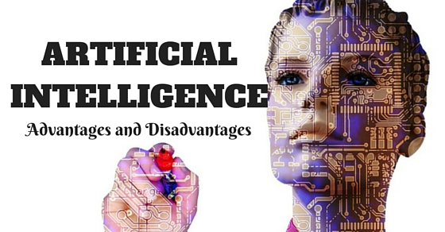

artificial intelligence
links
Applications of Artificial Intelligence:
1-Gaming: It is beneficial in algorithmic and strategic games like chess, wherein the machine can process various potential instances and steps and be capable of lateral thinking.
2-Language Processing: It helps in effective communication with systems, mainly computers that can process and understand the language spoken by humans.
3-Vision Systems: They can perceive and interpret data by visualizing the input on the computer.
4-Speech Recognition: Few systems are capable of comprehending the language spoken by humans and reciprocate in the same way by grasping accent, grammar, etc.
5-Handwriting Recognition: This unique function of AI enables particular handwriting to be read and transform it into an editable text.
6-Robots: Robots are one of the most valuable inventions of humans up to date. They are extremely efficient in their tasks as they can multitask well and save time in doing so too. They have vast memory and can easily adjust to their environment. Thus making is able to reap its many benefits.

Advantages of AI
Easy Availability – One of the biggest advantages of machines is that they do not require constant refreshment like humans and can work for hours at a stretch. They have the capability to perform tasks and work continuously without compromising on the quality of the output.
Day to Day Application – The most widely used machine in our daily lives is a smartphone, which results in us unknowingly or knowingly using the benefits of AI. A few examples demonstrating the control and power AI exercises in our daily life is the use of Siri for Apple devices, GPS used for navigation and product recommendations on Amazon.
Error Reduction – Accuracy and precision is an important function of Artificial Intelligence that is reached successfully. Thus, it helps in recognizing and rectifying errors.
Dealing with repetitive tasks – Monotonous tasks are time-consuming. AI algorithms can be used to deal with these tasks. Machines are capable of multitasking and can function faster than humans.
Medical Applications – AI is widely used in the medical field. It is popularly used in identifying potential cancer risks and neurological diseases.
Digital Assistants – Digital assistants or clones/duplicates are used to communicate with various users, resulting in less use of manpower. Since robots and devices do not have any emotional intelligence, they end up applying logic more efficiently and thus arrive at the right decisions.
DisAdvantages of AI
High Cost – Artificial Intelligence enhances productivity providing efficient results, but incurs huge costs as the machines are highly complex and intricate in their training. Hence, their maintenance results in even bigger costs being incurred.
Inability to replicate humans – Most believe that human intelligence cannot be duplicated. Even though machines can get smarter with time and prove to be more efficient than humans, they still will never be able to possess emotions and moral concepts which are innate traits of humans.
Cons Of AI - Pros And Cons Of AI - Edureka
No value of experience – Humans rely on experience to further and determine their performance and on the other hand, machines do not completely have this trait. Machines do not possess the quality of being reactive to environments and this is where the difference lies between machines and humans.
Unemployment – This is a growing concern in any part of the world and most solutions adopted and devised to combat unemployment still has not been able to completely eradicate the issue. Abusing the benefits of AI and overusing it can make humanity highly dependent on machines. This will lead to a major loss of thinking ability resulting in creativity and ideas.